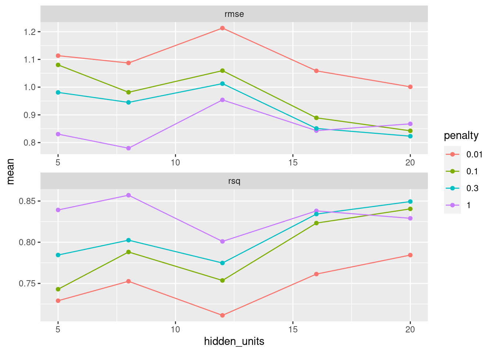
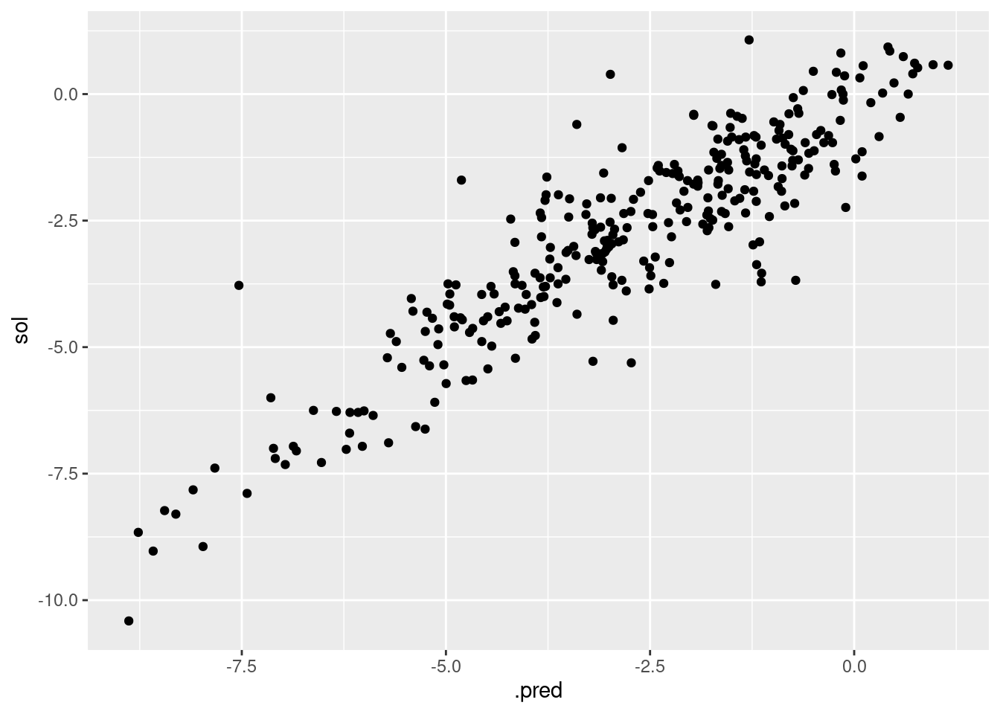

tidymodels 프레임 내 신경망 회귀
tidymodels 프레임은 tensorflow/keras와 nnet 패키지에 대한 인터페이스를 제공한다. 회귀나 분류 문제를 수행할 수 있으나 제한적인 신경망만 구성할 수 있다. 이 포스트에서는 은닉층이 하나만 존재하는 완전 연결 신경망을 구성하고 K-겹 교차 검증를 이용하여 신경망 튜닝을 수행해 보겠다. 데이터 전처리, 튜닝 변수를 가진 모델 정의, 튜닝 격자 정의, 적합 수행 및 결과 정리, 마지막으로 최적 튜닝 값을 이용하여 검증 데이터에 적용해 보겠다.
용해도 데이터의 회귀 분석에 대하여 이전 포스트 tidymodels 프레임 내 회귀 분석 기본 문서를 참고하자. tidymodels 프레임에서 신경망 이용은 아직 제한적이므로 이 포스트는 튜닝 절차를 정리하는데 초점을 맞추겠다.
데이터
library(tidyverse)
library(tidymodels)
library(AppliedPredictiveModeling)
data(solubility)
ls(pattern = "^sol")## [1] "solTestX" "solTestXtrans" "solTestY" "solTrainX"
## [5] "solTrainXtrans" "solTrainY"BoxCox가 적용된 데이터는 접미사 trans가 붙어있다. 특징 변수와 응답 변수를 하나의 데이터 프레임에 담아서 진행하자.
sol_train <- as_tibble(solTrainXtrans) %>%
mutate(sol = solTrainY) %>%
relocate(sol)
sol_test <- as_tibble(solTestXtrans) %>%
mutate(sol = solTestY) %>%
relocate(sol)전처리
BoxCox가 이미 적용된 데이터로, 추가적으로 상관성이 높은 특징 변수를 제거하고 표준화를 진행한다.
sol_rec <- recipe(sol ~ ., data = sol_train) %>%
step_corr(all_predictors(), threshold = 0.9) %>%
step_center(all_predictors()) %>%
step_scale(all_predictors())
sol_rec## Data Recipe
##
## Inputs:
##
## role #variables
## outcome 1
## predictor 228
##
## Operations:
##
## Correlation filter on all_predictors()
## Centering for all_predictors()
## Scaling for all_predictors()튜닝 변수와 격자 정의
신경망 튜닝을 위하여 은닉 층 유닛 수와 정규화 계수를 선택하였다. mlp 함수의 전달인자로 입력할 수 있고, dials 패키지에도 정의되어 간편하게 튜닝 격자를 생성할 수 있다.
sol_spec <-
mlp(epochs = 100,
hidden_units = tune(),
penalty = tune()) %>%
set_mode("regression") %>%
set_engine("nnet", verbose = 1, MaxNWts = 10000)
sol_spec## Single Layer Neural Network Specification (regression)
##
## Main Arguments:
## hidden_units = tune()
## penalty = tune()
## epochs = 100
##
## Engine-Specific Arguments:
## verbose = 1
## MaxNWts = 10000
##
## Computational engine: nnet튜닝 격자에 penalty = 0.3 항을 수동으로 추가해 주었다.
sol_grid <- grid_regular(
hidden_units(range = c(5, 20)),
penalty(range = c(-2, 0)),
levels = c(hidden_units = 5, penalty = 3)
)
sol_grid <- sol_grid %>%
add_row(sol_grid %>% filter(penalty == 0.01) %>% mutate(penalty = 0.3))
sol_grid %>% head()## # A tibble: 6 x 2
## hidden_units penalty
## <int> <dbl>
## 1 5 0.01
## 2 8 0.01
## 3 12 0.01
## 4 16 0.01
## 5 20 0.01
## 6 5 0.1K-겹 데이터
set.seed(123)
sol_folds <- vfold_cv(sol_train, v = 5)튜닝 격자 탐색
지금까지 만들어온 전처리 및 튜닝 모델을 workflow에 설정하여 튜닝 격자를 탐색한다. 결과는 collect_metrics 함수로 정리할 수 있다.
sol_wf <- workflow() %>%
add_model(sol_spec) %>%
add_recipe(sol_rec)
sol_res <- sol_wf %>%
tune_grid(
resamples = sol_folds,
grid = sol_grid
)##
## Attaching package: 'rlang'## The following objects are masked from 'package:purrr':
##
## %@%, as_function, flatten, flatten_chr, flatten_dbl, flatten_int,
## flatten_lgl, flatten_raw, invoke, list_along, modify, prepend,
## splice##
## Attaching package: 'vctrs'## The following object is masked from 'package:dplyr':
##
## data_frame## The following object is masked from 'package:tibble':
##
## data_framesol_res %>%
collect_metrics() %>%
head()## # A tibble: 6 x 8
## hidden_units penalty .metric .estimator mean n std_err .config
## <int> <dbl> <chr> <chr> <dbl> <int> <dbl> <chr>
## 1 5 0.01 rmse standard 1.11 5 0.0524 Preprocessor1_Mod…
## 2 5 0.01 rsq standard 0.729 5 0.0234 Preprocessor1_Mod…
## 3 8 0.01 rmse standard 1.09 5 0.0717 Preprocessor1_Mod…
## 4 8 0.01 rsq standard 0.753 5 0.0283 Preprocessor1_Mod…
## 5 12 0.01 rmse standard 1.21 5 0.0914 Preprocessor1_Mod…
## 6 12 0.01 rsq standard 0.711 5 0.0310 Preprocessor1_Mod…sol_res %>%
collect_metrics() %>%
mutate(penalty = factor(penalty)) %>%
ggplot(aes(x = hidden_units, y = mean, color = penalty)) +
geom_line() +
geom_point() +
# scale_x_continuous(trans = "log10") +
facet_wrap(~ .metric, scales = "free", nrow = 2)
상위 5 적합
sol_res %>%
show_best("rmse")## # A tibble: 5 x 8
## hidden_units penalty .metric .estimator mean n std_err .config
## <int> <dbl> <chr> <chr> <dbl> <int> <dbl> <chr>
## 1 8 1 rmse standard 0.780 5 0.0313 Preprocessor1_Mod…
## 2 20 0.3 rmse standard 0.823 5 0.0352 Preprocessor1_Mod…
## 3 5 1 rmse standard 0.831 5 0.0305 Preprocessor1_Mod…
## 4 20 0.1 rmse standard 0.843 5 0.0170 Preprocessor1_Mod…
## 5 16 1 rmse standard 0.843 5 0.0483 Preprocessor1_Mod…최우선 적합 및 검증
sol_best <- sol_res %>%
select_best("rmse")
sol_best## # A tibble: 1 x 3
## hidden_units penalty .config
## <int> <dbl> <chr>
## 1 8 1 Preprocessor1_Model12최우선 적합 결과에 대한 workflow를 정리하였다.
sol_wf_best <- sol_wf %>% finalize_workflow(sol_best)
sol_wf_best## ══ Workflow ════════════════════════════════════════════════════════════════════
## Preprocessor: Recipe
## Model: mlp()
##
## ── Preprocessor ────────────────────────────────────────────────────────────────
## 3 Recipe Steps
##
## ● step_corr()
## ● step_center()
## ● step_scale()
##
## ── Model ───────────────────────────────────────────────────────────────────────
## Single Layer Neural Network Specification (regression)
##
## Main Arguments:
## hidden_units = 8
## penalty = 1
## epochs = 100
##
## Engine-Specific Arguments:
## verbose = 1
## MaxNWts = 10000
##
## Computational engine: nnet마지막으로 훈련셋 전체에 대하여 적합을 진행한다.
sol_fit <- sol_wf_best %>% fit(sol_train)
pred_test <- predict(sol_fit, new_data = sol_test) %>%
bind_cols(sol_test %>% select(sol))
pred_test %>%
ggplot(aes(x = .pred, y = sol)) +
geom_point() 최종적으로 검정셋의 결과를 살펴보았다. K-겹 교차 검증을 수행하여 튜닝을 했지만 검증셋 결과와는 성능 지표 상 차이를 보였다.
rmse(pred_test, sol, .pred) %>%
add_row(rsq(pred_test, sol, .pred))## # A tibble: 2 x 3
## .metric .estimator .estimate
## <chr> <chr> <dbl>
## 1 rmse standard 0.898
## 2 rsq standard 0.820맺으며
tidymodels 패키지를 사용할 때 교차 검증과 모델 튜닝 방법을 살펴보았다. 신경망의 모델이 커지고 데이터가 많은 경우 K-겹 교차 검증을 수행하면서 모델 튜닝을 하기에는 계산자원 한계로 쉽지 않다. 전체 분석 흐름이 잡히면 부분부분 원하는 방식으로 교체하여 분석을 진행할 수 있다. 가령 신경망 대신 트리 기반의 알고리즘을 적용해 볼 수도 있다. 향후에는 모델간 비교 방법의 절차를 살펴보기로 하겠다.
참고
- 단호진 블로그, tidymodels 프레임 내 회귀 분석 기본, https://danhojin.github.io/r-blog/2020/11/19/intro-tidymodels-regression/
- 막스 쿤, 실전 예측 분석 모델링, 권정민 역, Springer/에이콘, 2018
- tidymodels tutorial, Tune model parameters, https://www.tidymodels.org/start/tuning/